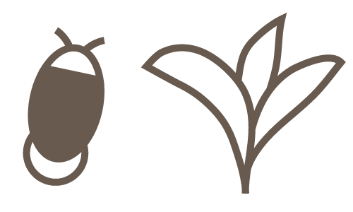

次回のツアー情報
- 開催日
- 7月4日
- 時間
- 18:30～
- 開催場所
- 城南大学理工学部生物学科塔前
城南大学では、7～8月にかけて近くの小川に生息する蛍を観察するミニツアーを開催しています。蛍の舞う姿ときれいになった小川を一緒に楽しみませんか？
小川にの途中にある、色々な植物や動物も見逃せませんよ。
現在ライブ中継を行っています
現在ライブ中継は行っていません
蛍はきれいな水辺のみ生息する生き物です、みんなでルールを守って美しい小川を維持しましょう。
むやみに周囲を照らすと蛍の活動の妨げとなります。ライトの使用は必要最低限にし、お互いマナーを守って楽しく鑑賞しましょう。
周囲の植物や生物を傷つけることは環境破壊につながります。また、蛍は成虫に成長してから数日しか寿命がありません。むやみに持ち帰ることはやめましょう。
